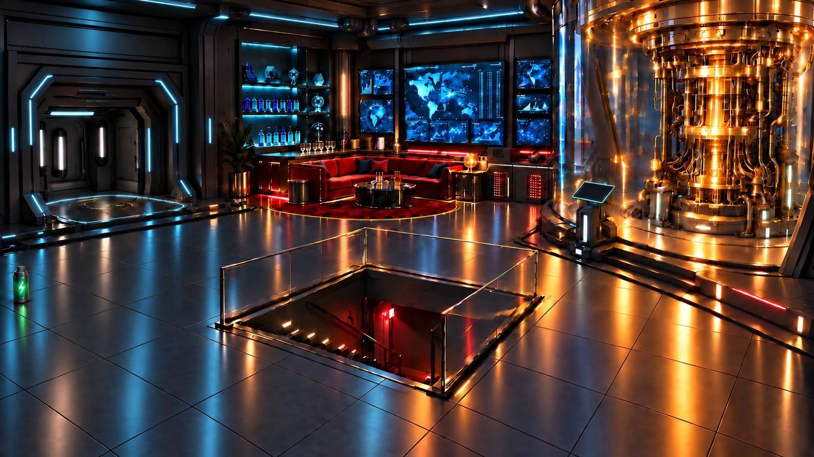

Level 1 von 4
Bereit zum Einsatz
Operation Nullpunkt · Level 1 von 4
Stoppe den Quantenangriff!
Der Lord steht kurz davor, mit seinem Quantencomputer PICO die geheimen Schlüssel eines internationalen Zahlungssystems zu knacken und Überweisungen zu fälschen. Du bist mit deiner Kollegin in seiner Basis. Während sie das Sternenfragment sichert, übernimmst du PICO.
Taktische Übersicht
Bereit zum Einsatz
Die Kommandozentrale

PICO · Wartungsterminal
AKKU10 %
X −365Y 55
LINK ●
Akku: kritischer Zustand!
Start Zugang (−365, 55)Ziel PICO (220, 15)
Einsatzprotokoll
Noch nicht ausgeführt
Steuere die Drohne zum Wartungsterminal von PICO.
Fliege zum Wartungsterminal bei (220, 15). Ergänze ganz unten im Code den Aufruf fliege_zu(x, y) mit diesen Zielkoordinaten und beobachte den Flug.
Flugprotokoll
Die Drohne wartet am Zugang auf deinen Flugauftrag.